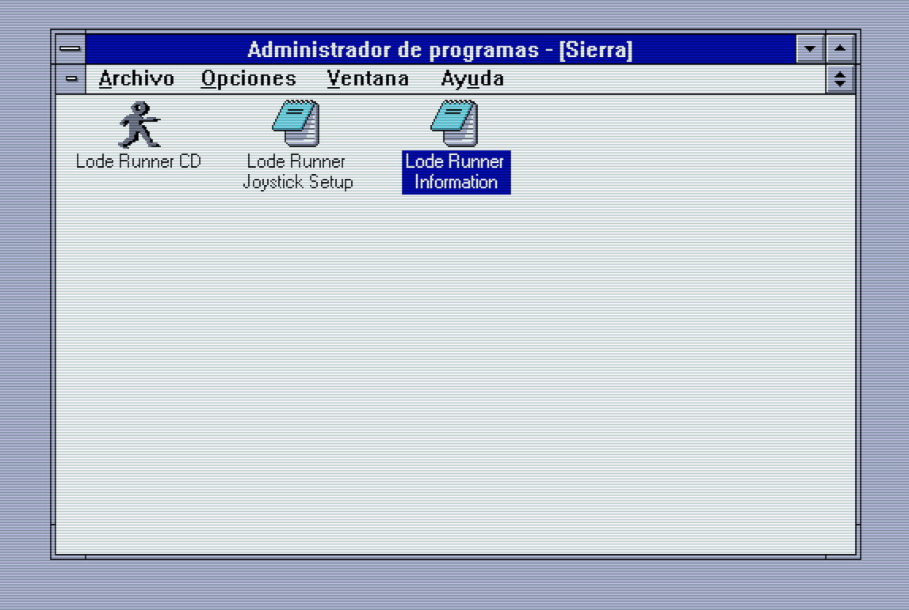
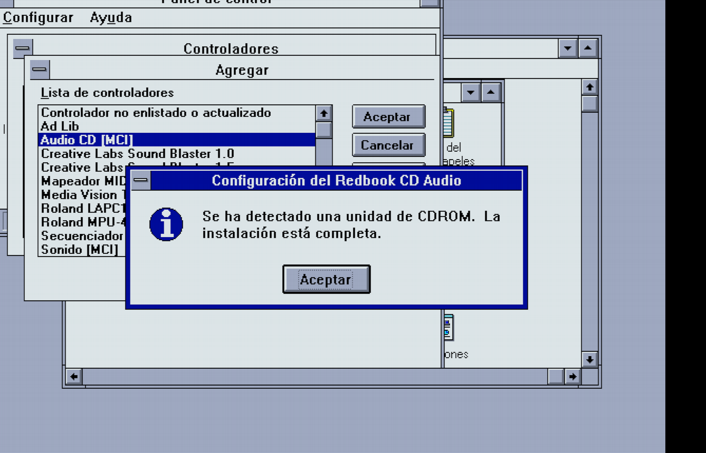

Un doble clic en Jugar a Lode Runner.bat monta el CD, arranca Windows 3.1 a pantalla completa y abre el juego. Esta guía reproduce la instalación que probamos con la edición española Big Box en CD-ROM, con vídeo a 640 × 480 y 256 colores, música desde las pistas del disco y efectos de sonido mediante una Sound Blaster 16 emulada.
La prueba se realizó el 15 de noviembre de 2026 en Windows 10 Pro 22H2 x64, compilación 19045.6466, con DOSBox Staging 0.83.0 y Windows 3.1 en español.
Ficha de la edición · Preservación del CD · Guía de ejecución con DAEMON Tools y otvdm
1. Prepara el entorno común y el CD de trabajo
Sigue la guía de preparación de un entorno portable Windows 3.1 con DOSBox Staging para instalar Windows 3.1 en español, el controlador S3 Vision 964 v1.41B5 y Creative Sound Blaster 16. Utiliza el modo 640 × 480 y 256 colores. Conserva los disquetes originales de Windows para añadir Audio CD [MCI] cuando corresponda. QuickTime no fue necesario para esta prueba.
Crea lode-runner-portable y copia dentro toda la carpeta del emulador con el nombre dosbox-staging-v0.83.0, incluido drives\c. A su lado crea img y coloca una copia de trabajo de tu CD, LODE_RUNNER_CD.CUE y LODE_RUNNER_CD.BIN. La edición probada tiene una pista de datos y 32 pistas de audio; conserva ambos archivos juntos y el nombre del BIN referenciado por el CUE.
Durante la sesión original se instaló Windows, se instaló el juego y después se añadieron MCI y los controladores S3 y Creative. La guía transversal permite reutilizar la base ya preparada; no se ha repetido una instalación integral del juego con ese orden reorganizado. Conservamos a continuación los ajustes específicos y las comprobaciones del caso real.
2. Monta el CD e instala el juego en Windows 3.1
Abre el dosbox.exe de la copia del juego desde su propia carpeta. En la consola de DOSBox, monta el CUE y verifica que el instalador aparece en D:.
MOUNT D "..\img\LODE_RUNNER_CD.CUE"
DIR D:\INSTALL.EXE
C:
CD \WINDOWS
WINEn el Administrador de programas, abre Archivo → Ejecutar, escribe D:\INSTALL.EXE y acepta. Puedes usar C:\LODERUNN como carpeta de destino. Mantén D:\ como unidad del CD cuando el asistente la solicite. Selecciona Full y deja Install Joystick Drivers desmarcado para jugar con teclado. Al acabar verás Lode Runner CD en el grupo Sierra.

3. Activa la música del CD con Audio CD [MCI]
Windows 3.1 necesita el controlador Audio CD [MCI] para que esta edición pueda reproducir las pistas del disco. Haz este paso con la imagen del juego montada en D:.
Monta el cuarto disquete
Si ya estás en Windows 3.1, sal al DOS emulado. Si Audio CD [MCI] ya está instalado y detecta la unidad, puedes omitir la instalación del controlador. Monta en A: el cuarto disquete de Windows. El ejemplo usa la carpeta win31-disks descrita en la guía técnica transversal. Si los disquetes se conservan fuera del paquete, copia temporalmente disk04.img a esa carpeta junto a dosbox.exe de la copia de trabajo, o adapta la ruta. Si ya hay un disquete montado en A:, puedes cerrar y volver a abrir DOSBox para empezar con esa unidad libre. En una nueva sesión vuelve a montar también el CD en D:.
MOUNT A "win31-disks\disk04.img" -t floppy
C:
CD \WINDOWS
WINAñade el controlador
En Windows 3.1 abre Principal → Panel de control → Controladores → Agregar… → Audio CD [MCI].
Confirma la detección del CD-ROM
Si Windows solicita el disquete 4, indica A:\. Al terminar, debe aparecer el mensaje de que se ha detectado una unidad de CD-ROM.

4. Comprueba el vídeo y el sonido de esta edición
En la prueba inicial, el juego avisó de que funcionaba a 16 colores. El controlador S3 con modo 640 × 480 y 256 colores resolvió ese aviso. Comprueba que el modo de pantalla es el indicado, siguiendo el apartado S3 de la guía técnica transversal si aún no lo has configurado.
La música CDDA y los efectos digitales utilizan rutas diferentes. Antes de instalar el controlador Creative, se oía la música del CD, pero el juego avisaba de que desactivaría los efectos. Se resolvió instalando el controlador SB16 en C:\WINDOWS y ajustando IRQ 7, DMA 1 y DMA alta 5 según SET BLASTER.
Comprueba primero la reproducción de C:\WINDOWS\TADA.WAV desde el Transmisor de medios de Windows 3.1, tal como se describe en la guía común. Después abre Sierra → Lode Runner CD y entra en un nivel. Comprueba la música de fondo y un efecto de juego, por ejemplo al recoger una pieza de oro. Ambas rutas de audio funcionaron en la prueba final.
5. Automatiza el montaje y arranca a pantalla completa
En esta sesión se utilizó el fichero dosbox-staging.conf propio del paquete, junto a dosbox.exe. Se conserva esta configuración específica tal como se probó; la guía técnica transversal también documenta el arranque explícito con --noprimaryconf, validado posteriormente en otro caso. Si tu copia todavía usa la configuración principal del anfitrión, puedes copiar la de %LOCALAPPDATA%\DOSBox\dosbox-staging.conf para conservar los ajustes que ya funcionan. Si no existe, crea el fichero con el Bloc de notas usando Todos los archivos para guardarlo con extensión .conf.
Edita las secciones existentes. Si falta alguna, créala una sola vez. El bloque muestra solo los ajustes de arranque y pantalla. Conserva los ajustes del emulador y de audio que usaste para verificar el juego.
[sdl]
fullscreen = on
[render]
aspect = stretch
viewport = fit
integer_scaling = off
[autoexec]
mount d "..\img\LODE_RUNNER_CD.CUE"
C:
CD \WINDOWS
WINEl montaje va antes de WIN para que el CD esté disponible al arrancar Windows. Con aspect = stretch, la imagen llena el monitor y se ensancha en una pantalla panorámica. Para conservar las proporciones, usa aspect = auto y deja los otros ajustes de escalado tal como están. En un monitor 16:9 quedarán bandas a los lados. Alt + Intro alterna entre pantalla completa y ventana.
Configuración portable · Proporciones y escalado
6. Abre el juego directamente y crea el lanzador
En Windows 3.1, abre el grupo Sierra y mantén pulsada Ctrl mientras arrastras Lode Runner CD al grupo Inicio del Administrador de programas. Se conserva el acceso de Sierra y la copia del grupo Inicio se ejecuta cada vez que arranca Windows. Sal de Windows normalmente para guardar el cambio.
Crea Jugar a Lode Runner.bat en la raíz de lode-runner-portable. Desde el Bloc de notas, selecciona Todos los archivos al guardarlo.
@echo off
setlocal
set "DOSBOX_DIR=%~dp0dosbox-staging-v0.83.0"
start "" /d "%DOSBOX_DIR%" "%DOSBOX_DIR%\dosbox.exe"%~dp0 toma la ruta del propio lanzador. El parámetro /d inicia DOSBox con su carpeta como directorio de trabajo. Así, la ruta ..\img\LODE_RUNNER_CD.CUE sigue funcionando al mover el conjunto.
Dentro de lode-runner-portable | Qué contiene |
|---|---|
Jugar a Lode Runner.bat | Lanzador situado en la raíz |
dosbox-staging-v0.83.0\ | DOSBox, sus recursos y dosbox-staging.conf |
dosbox-staging-v0.83.0\drives\c\ | Windows 3.1, el juego instalado y su estado persistente |
img\ | LODE_RUNNER_CD.CUE y LODE_RUNNER_CD.BIN |
Comportamiento del grupo Inicio en Windows 3.1, documentación de Microsoft archivada
7. Verifica la portabilidad
Cierra DOSBox, copia toda la carpeta a otra ubicación y deja desmontado el CD en el Windows anfitrión. Ejecuta Jugar a Lode Runner.bat desde la copia y comprueba que el juego se abre directamente a pantalla completa. Entra en un nivel, escucha la música y los efectos y guarda una partida. Cierra el juego y DOSBox. Vuelve a ejecutar el lanzador y carga la partida.
En el laboratorio se confirmaron el arranque desde otra ubicación, la música del CD, los efectos y la recuperación de una partida después de cerrar y volver a abrir. La validación corresponde a la edición y al entorno indicados al principio de la guía.